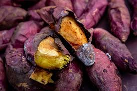

농작물 명칭: (고구마)
재배 및 생산 특성
- 고구마 정의:고구마(sweet potato)는 메꽃과의 여러해살이 식물로, 식품 또는 작물로서 가리킬 때는 특히 전분이 발달한 덩이뿌리를 말한다. 탄수화물이 풍부하고 병충해에 강해 감자와 함께 전통적인 구황작물로 여겨졌으며, 오늘날에도 풍부한 단맛으로 널리 사랑받는 채소이다. 고구마는 식용은 물론이고 제당 및 약품, 화장품 생산을 위한 공업용으로 쓰이기도 한다.
- 고구마 종류: 밤고구마,호박고구마,꿀고구마, 자색고구마
- 고구마 재배:마사토나 황토 등 입자가 고운 토양에서 키우는 것이 상품성이 좋다. 토질이 돌이 많아 거칠고 단단한 땅일 경우 고구마 덩이뿌리가 제대로 뻗지 못해서 모양이 작고 기괴하며 거친 섬유조직이 많이 발달하게 되어 상품성이 떨어진다. school
유통 구조 설계
생산자→로컬푸드 직매장→최종 소비자
- 물류방식: 저온 유통(cold chain) 활용 여부 등
- 판매 전략:직거래 / 온라인 마켓 등
- !추운 겨울!:생각나는 맛있는 고구마